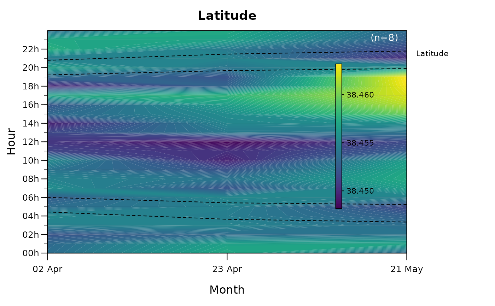

Contour plot (hour x date heatmap of a continuous variable)
Source:R/plotContours.R
plotContours.RdDraws a filled-contour plot of one or more continuous variables (e.g. depth,
temperature) over hour-of-day (y) and date (x), aggregated into time and date bins. It is the
continuous-variable counterpart of plotChronogram: the diel cycle (dawn / sunrise /
sunset / dusk boundaries) is overlaid to reveal how the variable varies with time of day across
the study period. A separate panel is drawn for each variable and, when split.by is supplied,
for each group.
Usage
plotContours(
data,
variables,
var.titles = NULL,
main = NULL,
plot.title = NULL,
split.by = NULL,
id.col = NULL,
datetime.col = NULL,
agg.fun = function(x) mean(x, na.rm = TRUE),
color.pal = NULL,
time.interval = "hour",
date.interval = "month",
date.format = NULL,
annual.cycle = FALSE,
diel.lines = 4,
diel.lines.color = "black",
coords = NULL,
solar.depth = 18,
zlim = NULL,
zlab = NULL,
shared.scale = FALSE,
reverse.scale = FALSE,
grid = TRUE,
grid.color = adjustcolor("black", 0.1),
na.color = grey(0.94),
cex = 1,
legend = TRUE,
sample.size = TRUE,
sample.size.color = "auto",
ncol = 1,
disable.par = FALSE,
file = NULL,
width = NULL,
height = NULL,
res = 300,
...
)Arguments
- data
A data frame containing the variable(s) to plot and a datetime column.
- variables
Column name(s) of the continuous variable(s) to plot (one panel per variable).
- var.titles
Optional display names for the variables (e.g. "Depth (m)"). If NULL, the column names are used.
- main
Panel title(s). If NULL (default), each panel is titled automatically (the group name when
split.byis set, the variable name, or both when several variables and groups are shown). Pass a character vector to override (recycled across panels), or FALSE to suppress panel titles.- plot.title
Optional overall title above the whole panel.
- split.by
Optional column name(s); a separate set of panels is drawn for each level (or combination of levels) - e.g. species, sex, life stage.
- id.col
Name of the column containing animal IDs. Defaults to
"ID".- datetime.col
Name of the column containing date-times in POSIXct format. Defaults to
"datetime".- agg.fun
Function used to aggregate values within each (id, time bin, date bin). Defaults to the mean.
- color.pal
Colours (or a palette function) for the contour fill. If NULL, viridis is used.
- time.interval
Bin width along the y-axis (hour of day), as a lubridate period string (e.g. "30 mins", "1 hour", "2 hours"). Defaults to "hour".
- date.interval
Bin width along the x-axis (date), as a lubridate period string (e.g. "1 day", "1 week", "1 month"). Defaults to "month".
- date.format
Optional
strftimeformat for the x-axis labels (e.g. "%b", "%b %Y"). If NULL (default), the label dates and format are chosen automatically from the axis span; the tick positions are always calendar-aligned (whole years/months) rather than arbitrary.- annual.cycle
Logical. If FALSE (default), the x-axis spans the true date range of the data; if TRUE, all data are wrapped into a single standardised annual cycle (Jan-Dec). See Details.
- diel.lines
Number of diel-boundary lines to draw: 0, 2 (sunrise/sunset) or 4 (dawn, sunrise, sunset, dusk). Defaults to 4.
- diel.lines.color
Colour of the diel lines. Defaults to "black".
- coords
Longitude/latitude (length-2 numeric, matrix or
SpatialPoints) for the diel-phase times. Required only whendiel.lines > 0.- solar.depth
Sun angle below the horizon (degrees) defining twilight. Defaults to 18.
- zlim
Optional length-2 numeric setting the range of the colour scale (e.g.
c(-10, 10)for a symmetric scale centred on zero), overriding the data-driven range. Note that values lying outside this range are not hidden: they are clamped ("squished") to the nearest limit and drawn in the corresponding extreme colour. A narrowerzlimtherefore saturates the extremes rather than leaving those cells blank, so the chosen range controls colour mapping only and never removes data. Defaults to NULL (range taken from the data).- zlab
Label for the colour-scale bar (e.g. units such as "Depth (m)"). If NULL (default), the variable's display name (
var.titles, or the column name) is used; pass a character vector to set it per variable, or FALSE to omit it. To reverse the colour scale, supply a reversedcolor.pal.Logical; use a common colour scale across all panels. Defaults to FALSE.
- reverse.scale
Logical; reverse the orientation of the colour-bar's value axis so the largest values sit at the bottom of the legend (akin to reversing an axis, e.g.
ylim(max, min)), which is often more intuitive for variables such as depth. This flips the legend only - each value keeps its colour, and the plotted colours are unchanged. To also change which colour represents high vs low values, supply a reversedcolor.pal(e.g.rev(...)). Defaults to FALSE.- grid
Logical; draw faint hour/date guide lines. Defaults to TRUE.
- grid.color
Colour of the grid lines. Defaults to a translucent black.
- na.color
Background colour for cells with no data (e.g. months outside the monitoring period when
annual.cycle = TRUE). Defaults to a very light grey.- cex
Global expansion factor for all plot text. Defaults to 1.
- legend
Logical; draw the colour-scale legend. Defaults to TRUE.
- sample.size
Logical; annotate each panel with the number of individuals contributing (
(n=...), top-right). Defaults to TRUE.- sample.size.color
Colour of the
sample.sizeannotation. "auto" (default) switches between black and white according to the brightness of the fill behind it; any colour can be given instead.- ncol
Number of columns in the panel layout. Defaults to 1.
- disable.par
Logical. If TRUE, the function does not set up its own multi-panel layout (so it can be embedded in a user-managed layout);
ncolthen has no effect. Defaults to FALSE.- file
Optional output file. If
NULL(the default), the figure is drawn on the current graphics device - the usual interactive behaviour. If a file path is supplied, moby opens a graphics device chosen from the file extension (.pdf,.svg,.png,.jpg/.jpeg,.tif/.tiffor.bmp), draws the figure to it, and closes the device automatically (also if an error occurs). For multi-page or batch workflows, keepfile = NULLand manage the device yourself (e.g.pdf(...); plot...(); dev.off()).- width, height
Output size in inches. Used only when
fileis supplied. IfNULL(default), a size is derived from the figure's structure (e.g. the number of individuals or panels). These defaults are sensible starting points, not guarantees: dense or unusual figures may still need you to setwidth/heightexplicitly. The two can be set independently.- res
Resolution in pixels per inch, for raster formats only (
.png,.jpg,.tif,.bmp); ignored for vector formats (.pdf,.svg). Used only whenfileis supplied. Defaults to 300.- ...
Further arguments passed to the underlying filled-contour routine.
Details
The temporal x-axis can be built in two ways, controlled by annual.cycle:
annual.cycle = FALSE(default) uses the true temporal extent of the data - the x-axis spans the observed date range (which may be a few months or several years).annual.cycle = TRUEwraps the data into a single standardised annual cycle (Jan-Dec), collapsing all years together. This is useful for comparing the typical seasonal pattern across individuals or datasets on a common framework, regardless of monitoring period.
Both modes share the same binning (time.interval, date.interval), diel overlay, grid, colour
scaling and legend logic; only the date axis (range and labels) differs.
The timezone for binning is taken from the datetime.col data (falling back to UTC).
Note
The colour-scale legend and panel margins are sized in inch units, so the layout stays consistent across datasets and graphics devices.
Examples
# contour plot of a continuous variable (here latitude) over hour-of-day and date,
# with the diel cycle overlaid
plotContours(rays, variables = "lat", var.titles = "Latitude",
coords = c(-9, 38.4))
#> Warning: - 'id.col' converted to factor.
#>
#> Contour plot
#> ------------------------------------------------------
#> Individuals: 8
#> Variables: lat
#> Period: 2023-04-02 to 2023-06-30 (88 d)
#> Binning: hour x month
#> Time axis: true extent
#> Diel: 4 lines
#> Scale: per panel
#> ------------------------------------------------------
